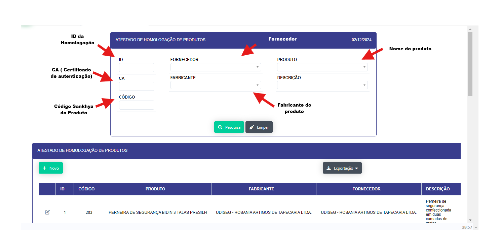
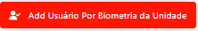

SGI 
Menu dedicado as aplicação do departamento de SGI (Sistema de Gestão Integrada)
-
Homologação de Produtos
- Descrição: Aplicação que retorna lista dos EPI's homologados para uso para as equipes operacionais.

-
Passo a passo:
-
Aplicação abre em formato de filtro onde pode-se passar os parametros para a busca e abertura do relatório. Sendo eles :
- Id de Homologação interna (DOLP).
- Codigo do produto (Sankhya).
- Fornecedor.
- Nome do Produto.
- Fabricante do produto.
- Descrição do Produto.
- Ao selecionar os parametros para abertura do relatorio se abrirá abaixo a lista de produtos :

- Ao clicar no botão "NOVO" se abrirá uma nova para que possa ser feito o cadastro da homologação de um novo produto.

- Ao abrir icone de "Edição se abrirá uma nova tela para que que se possa editar as informações do produto cadastrado.

- Ao clicar no icone "PDF" se abrirá um documento em pdf do atestado de homologação do produto selecionado.
-
Lista mestra

Esta sessão esta destinada para o gerenciamento centralizadado de documentos, procedimentos, áreas e informações relacionadas ao niveis de acesso e armazenamento da informação.
-
Cadastro

-
Descrição: Aplicação que permite o cadastro de documentos, procedimentos, aréas e niveis de acesso.
-
Passo a passo:
-
Aplicação abre em forma de filtro para que possa ser passado os parametros para a busca e abertura da lista de documentos, neste filtro nenhum dos parametros são obrigatórios.
-
Ao clicar no botão "NOVO" se abrirá uma nova tela para que se possa realizar o cadastro de um novo documento.

-
Prencha os campos solicitados e clique no botão "INCLUIR" para realizar o cadastro do documento.
-
No relatorio aberto e possivel cliclar no ícone de "EDITAR" para realizar a edição do documento.

-
Ao clicar no link na coluna arquivo, realizará o download do arquivo solicitado.
-
Relatório

-
Descrição: Aplicação que permite a visualização dos documentos, procedimentos, áreas e niveis de acesso.
-
Passo a passo: Aplicação abre em forma de filtro para que possa ser passado os parametros para a busca e abertura da lista de documentos, neste filtro nenhum dos parametros são obrigatórios.
- Abre o Relatorio dos documentos da lista mestra

-
Ao clicar no link na coluna arquivo, realizará o download do arquivo solicitado.
-
Cadastros auxiliares

Sub - menu para cadastro de documentos, áreas, indentificação e cadastro de proteção (nivéis de acesso)
-
Cadastro de documentos

-
Descrição Aplicação para cadastro e edição dos nomes do documentos/procedimentos
- Ao clicar no botão "NOVO" se abrirá uma nova tela para que se possa se realizado o novo registro.
-
Prencha os campos solicitados e clique no botão "INCLUIR" para realizar
-
Ao clicar no icone de edição se abrirá uma nova tela para que se possa realizar a edição do documento.

-
Cadastro de Área

-
Descrição : Aplicação para cadastro e edição das áreas de atuação e disponilibilidade da informação.(Departamento)

-
Passo a passo :
-
Ao clicar no botão "NOVO" se abrirá uma nova tela para que se possa se realizado o novo registro.
-
Prencha os campos solicitados e clique no botão "INCLUIR"
-
Ao clicar no icone de edição se abrirá uma nova tela para que se modificar um um registro já realizado.
-
Cadastro de Identificação
-
Descrição : Aplicação para cadastro e edição das identificações dos documento (Descrição).

-
Passo a passo :
-
Ao clicar no botão "NOVO" se abrirá uma nova tela para que se possa se realizado o novo registro
- Ao clicar no icone de edição se abrirá uma nova tela para que se possa realizar a edição do registro.
-
Cadastro de Proteção

-
Descrição : Aplicação para cadastro e edição das proteções dos documentos (Descrição), Departamento ou setor responsavel e seu respectivo nivel de acesso.

-
Passo a passo :
-
Ao clicar no botão "NOVO" se abrirá uma nova tela para que se possa se realizado o novo registro
- Ao clicar no icone de edição se abrirá uma nova tela para que se possa realizar a edição do registro.

- Aqui se pode excluir ou editar ou registros.
-
-
Lista de Presença

Esta sessão esta destinada as aplicação para registro e controle de lista de presença, em treinamentos , DDS, Certificações, palestras, eventos corporativos e afins.
-
IMPORTANTE: Está aplicação e gerenciada por niveis de acesso sendo eles
-
CADASTRO (Tem permissão de realizar o registro das lista de presença de qualquer tipo)
-
TITULO (Tem a permissão de criar os titulos para as listas de presença)
-
EFICÁCIA(Tem a permissão para avaliar a eficacia)
-
RELATÓRIOS (Tem acesso aos relatorios dos registros)
-
PRESENÇA (Acesso padrão a todos os usuarios do sistema para que possam assinar as listas de presença, podendo ser assinatura digital ou via biometrica)
-
Registrar
-
Inclusão - Tela Padrão de abertura

-
Descrição: Cria uma novo registro para ser assinado podendo ser treinamentos, DDS, Certificados, palestras, Tratativas de não conformidades e registros de eventos.
-
Passo a Passo:
-
No campo TIPO selecione a opção de registro :
- Certificação
- DDS
- DDS ENERGISAs
- DDS EQUATORIAL
- DDS Equatorial Administrativo
- DDS Equatorial Operacional
- DDS PRÁTICO
- OUTRO
- PALESTRA
- SIPTMA
- TREINAMENTO
- No campo ORIGEM selecione a opção
- INTERNO (Se o instrutor , palestrante for um colaborador DOLP)
- EXTERNO (Se o instrutor , palestrante for uma pessoa externa)
- No campo AÇÃO EXISTENTE selecione a opção caso a lista de presença seja fruto de um plano de ação
- SIM
- NÃO
- No campo NºPLANO DE AÇÂO selecione o registro do numero do plano de ação caso este registro possua uma ação existente. (Na pratica esta realionada com a reposta acima caso a mesma seja positiva deverá selecionar na lista o numero do plano de ação a qual esta relacionado, caso negativa deixar em branco)
- No campo TRATATIVA NC EXISTENTE selecione a opção caso a lista de presença seja parte da tratativa de uma Não conformidade
- SIM
- NÃO
- No campo ID TRATATIVA selecione o registro do ID da tratativa relacionado a lista de presença. (Na pratica esta relacionada com a reposta acima caso a mesma seja positiva deverá selecionar na lista o id da tratativa da NC a qual esta relacionado,caso negativa deixar em branco).
- No campo ID NC selecione o registro do ID da Não conformidade referente ao id da tratativa da não conformidade caso a resposta acima seja positiva,caso negativa deixar em branco.
- No campo UNIDADE selecione a unidade a qual está sendo realizado o registro.
-
Após clicar no botão " + INCLUIR" se abrirá mas 3 abas sendo elas :
-
INSTRUTOR - Vs- CONTEUDO:

- Ao clicar no botão "INCLUIR" se abrira uma tela para inclusão do conteudo da atividade

- PARTICIPANTES :
- Se abrirá um tela onde será inseridos os participantes da lista de presença
- Tendo duas opções :
- a inserção manual no botão


-
a automatizada de todos os colaboraboradores da unidade atraves do botão 
-
ANEXO :
Nesta aba se abrirá a opção para inserções de inserções dos arquivos.

-
Edição - Botão localizar registros

Se abre uma consulta onde se tem acesso aos registros já criador com suas informação principais e status onde em cada registro se tem acesso ao formulario para ediçao e tratativas adicionais e tambem a opção de coletar as assinatuturas biometricas da lista

- Ao clicar no botão de edição se abrir o formulário do registro com as 4 abas abertas.

-
Descrição: Realiza a edição e acompanhamento dos registros para inclusão de anexos e solicitação de assinaturas por via biometrica.
-
Passo a Passo:
-
No Botão " Coletar Biometrias da lista" se abre uma aplicação onde se poderá coletar a assinatura de todos os participantes da lista"
 se abrirá uma aplicação para que se possa realizar as coletas das biometrias.
se abrirá uma aplicação para que se possa realizar as coletas das biometrias.

-
-
Cronograma de Treinamentos

Está seção abre o cronograma de treinamentos, a tela inicial se abre em forma consulta mostrandos as informações dos registros

-
Descrição:
-
Cria um planejamento dos treinamentos a serem realizados.
-
Passo a passo :
- Ao clicar no botão "NOVO" se abrirá um tela de cadastro de treinamento.
- Data Inicial prevista
- Data de Validade
- Base
- Responsavel Treinamento
- Público Alvo
- Tipos
- Titulo

-
-
Titulo

Sub-menu onde se da acesso a criação, edição e analise dos titulos criados para as atividades propostas as listas de presença
-
Cadastro

Esta aplicação onde são registrados os titulos das atividade e sua duração, ela abre um relatorio com os titulos já existentes.

-
Descrição: Aplicação para criação dos titulos das atividades, onde cada titulo atribui a uma tipo de registro.
-
Passo a Passo : Ao clicar no botão "NOVO" abrirá uma tela para criação de um novo titulo.

-
No campo "TIPO" deverá ser informado o tipo do registro vinculado ao titulo
- No campo "GERA CERTIFICADO" deverá ser informado se a atividade gerá um certificado.
- No campo ao Centro "SISTEMA DE GESTÃO" deverá ser informado o departamento responsavel pela atividade
- No campo "Horas : Min" Deverá ser infomado a duração da atividade, onde após a inclusão sera convertido no campo "Duração em Minutos"
-
No campo "TITULO" - deverá ser informado o titulo da atividade.
-
Relatório

-
Descrição: Relatorio que trás os titulos criados para cada tipo de atividade, Aplicação se abre em formato de filtro onde deve-se passa os parametros para abertura do relatorio do item a ser buscado.
- Passo a passo:
- No campo "Tipo" Selecione o tipo de atividade, ao qual se quer consultar os titulos criados Este campo es obrigatorio para a consulta os demais campos são para otimização da mesma sendo eles
- ID (numero do titulo)
- SIGE (Sistema de Gestão - Departamento Responsavél)
-
TITULO Será retornada uma lista apartir do tipo de Atividade selecionada no campo "TIPO"

-
Após colocar os paramentros desejados ao clicar no botão "Pesquisa" , Se abriará o relatorio com o resultado.

-
-
Relatório

Sub menu de relatorios personalizados
-
Por Registro

-
Descrição : Aplicação faz busca pelos id dos registro das atividades, Aplicação abre em formato de filtro que após a passagem de paramentros abre o relatorio. Relatorio focado nas principais informações da lista de presença se seu status, Podendo ser Aguardando(Ainda falta assinaturas e analise de eficacia), Cancelado(quando atividade proposta e cancelada),Eficaz(quando a atividade proposta teve suas assinaturas compostas e sua avaliação foi ineficaz) e Ineficaz(Quando a atividade fim não conseguiu chegar em seus objetivos)

-
Passo a passo :
- Selecione os campos que serão passados como parametros sendo eles :
- Nº de Registro (Id da lista de presença)
- Tipo : Selecione o tipo de atividade exemplo : DDS, Treinamento , Certificação.
- Requerente : Seleciona o instrutor
- Campos de datas: realiza um busca completa pelos paramentro das datas selecionadas.
- Base : Unidade em qual foi realizada
- SIGE : Sistema de Gestão - Departamento responsavel
-
Titulo : Realiza a busca pelos titulos das Atividades.

-
Por Instrutor

-
Descrição: Aplicação faz busca pelos instrutores, mostrando as atividades realizadas pelo mesmo. Aplicação abre em forma de filtro para que possa ser passados os paramentros para seu relatorio.

-
Passo a passo :
-
Selecione os campos que serão passados como parametros sendo eles :
- Nº de Registro (Id da lista de presença)
- SIGE : Sistema de Gestão - Departamento responsavel.
- Unidade : Unidade em qual foi realizada
- Titulo : Realiza a busca pelos titulos das Atividades.
- Filtro de Datas
- Status da Atividade
- Tipo : Selecione o tipo de atividade exemplo : DDS, Treinamento , Certificação.
- Origem : Selecione se a atividade foi realizada por um instrutor INTERNO OU EXTERNO

Apos a Abertura do relatorio e possivel acessar o registro em pdf de cada lista de presença atraves do Icone de PDF mostrado acima. Ao clicar se abrirá o Relatorio Abaixo.

-
Por Participante

-
Descrição : Aplicação faz busca pelos participantes , mostrando as atividades realizadas pelo mesmo. Aplicação abre em forma de filtro para que possa ser passados os paramentros para seu relatorio, retornando quais atividade para cada colaborador participou.

- Passo a Passo
- Selecione os campos que serão passados como parametros sendo eles :
- Nº de Registro (Id da lista de presença)
- Tipo : Selecione o tipo de atividade exemplo : DDS, Treinamento , Certificação.
- Titulo : Realiza a busca pelos titulos das Atividades.
- INSTRUTOR : Selecione o registro do Instrutor
- Filtro de Datas
- Presente : Se o usuário estava presente sim ou não
- Status da Atividade
- Unidade : Selecione a Unidade a qual a atividade foi realizada
- PARTICIPANTES : Realiza a busca pelos participantes das atividades Após setados os paramentros abrirá o relatorio conforme selecionado.

-
Feedback por Treinamento

Aplicação abre o relatorio do Feedback das atividades, tela se abre em forma de relatório mostrando as informação sobre a avaliação de cada treinamento

-
Passo a Passo
-
Ao abrir o botão no icone de Avaliações se abrirá um modal retornando a avaliação de cada pergunta

- Ao Abrir o botão ,se abrirá os seguintes campos onde se poderá passar os paramentros para a consulta.
- ID Treinamento
- Instrutor
- Titulo
- Unidade

-
Veja como é realizada as assinaturas da lista de presença no sistema SGDAcesse o MENU SGD e selecione a opção ASSINATURAS GERAIS
-
-